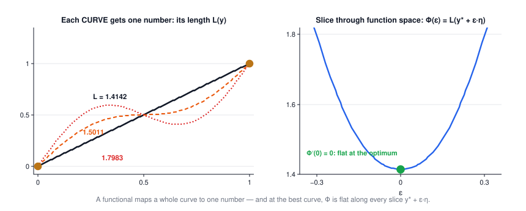
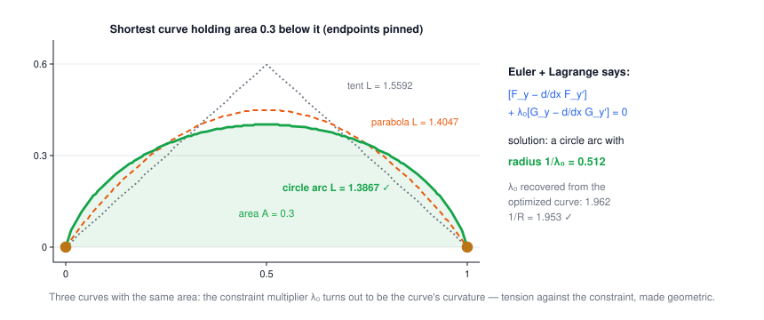

Lecture 9: Calculus of Variations
CSE 276C, Lecture 9 · Prof. Henrik Christensen · (full treatment: MATH 201C). All numbers verified in
scripts/lec9/verify.py.The big picture
Every optimization so far had finitely many knobs: n joint angles, n polynomial coefficients. A robot trajectory is not finitely many knobs — it's a knob at every instant. Calculus of variations is the machinery for "find the best function", and its central result turns each such problem into a differential equation (which Lecture 7 taught you to solve).
| robotics problem | the functional being minimized | the optimal function |
|---|---|---|
| smoothest / shortest arm motion | path length, or ∫ (jerk)² dt | the planned trajectory q(t) |
| minimum-energy walking gait | ∫ power dt over a stride | the gait cycle |
| mechanics itself | the action ∫ (T − V) dt | the motion nature picks (least action) |
| vision: image flow, reconstruction | data mismatch + smoothness integral | the recovered field or surface |
1 · Optimizing over functions
For \(f:\mathbb R^n \to \mathbb R\), "x* is a local minimum" means \(f(x)\ge f(x^*)\) nearby, and the necessary condition is \(\nabla f(x^*) = 0\). The whole lecture is one question: what is the analogue when the thing you're choosing is a function? You need (1) a "neighborhood of a function" and (2) a "gradient with respect to a function". The ε-trick below supplies both.
2 · What a functional is
A functional eats a whole function and returns one number:
$$J(y) = \int_{x_0}^{x_1} F\big(x,\, y(x),\, y'(x)\big)\, dx$$| symbol | meaning |
|---|---|
| \(y(x)\) | a candidate curve with pinned endpoints \(y(x_0)=y_0,\ y(x_1)=y_1\) |
| \(F(x, y, y')\) | the local cost rate — what one sliver dx charges, given where you are and how steep you are |
| \(J\) | the total bill for the whole curve: one number per curve |
The lecture's running example is arc length, \(F = \sqrt{1 + y'^2}\): each sliver charges its hypotenuse. The slides' gallery of problems all look like this — geodesics on a sphere, minimal surfaces, the hanging chain, light through layered media — same template, different F.

3 · The ε-slice trick
Function space is infinite-dimensional — you can't "take the gradient" directly. The slides' move: pick any bump shape \(\eta(x)\) that vanishes at the endpoints, and look only at the one-parameter family
$$y(x) = y^*(x) + \varepsilon\,\eta(x), \qquad \Phi(\varepsilon) = \int_{x_0}^{x_1} F(x, y, y')\,dx$$Now Φ is an ordinary function of one real number. If y* is optimal, every such slice has its minimum at ε = 0, so
$$\Phi'(0) = 0 \quad \text{for every admissible } \eta$$🕹️ Try it: slide ε, switch bump shapes, then switch to a non-optimal base curve and watch the slope at 0 come alive.
4 · Euler's equation
Differentiate Φ under the integral (chain rule through y and y′), then integrate the \(F_{y'}\eta'\) term by parts — the boundary term dies because η vanishes at the endpoints:
$$\Phi'(0) = \int_{x_0}^{x_1} \Big[ F_y - \frac{d}{dx} F_{y'} \Big]\, \eta\, dx = 0 \quad\text{for all } \eta \;\;\Longrightarrow\;\; \boxed{\,F_y - \frac{d}{dx}F_{y'} = 0\,}\ \text{ on } [x_0, x_1]$$| symbol | meaning |
|---|---|
| \(F_y\) | how the local cost reacts to moving the curve up at a point |
| \(F_{y'}\) | how it reacts to tilting the curve there |
| \(\frac{d}{dx}F_{y'}\) | how that tilt-sensitivity itself changes along the curve |
| the bracket = 0 | pointwise balance: no local move up/down can cut the total bill |
5 · Worked: the shortest path
For arc length \(F = \sqrt{1+y'^2}\): \(F_y = 0\) and \(F_{y'} = y'/\sqrt{1+y'^2}\), so Euler says
$$\frac{d}{dx}\,\frac{y'}{\sqrt{1+y'^2}} = 0 \;\Rightarrow\; \frac{y'}{\sqrt{1+y'^2}} = c \;\Rightarrow\; y' = m \;\Rightarrow\; y = mx + b$$The shortest curve between two points is a straight line — derived, not assumed.
Worked example, checked numerically (click to open)
Discretize y on 41 nodes between (0,0) and (1,1), start from the wiggly curve
\(y = x + 0.3\sin 2\pi x\) (length 1.7983), and let a generic optimizer (L-BFGS) minimize the
summed segment lengths. It converges to the straight line to 4 × 10⁻⁶ per node, length
1.414214 = √2. And on the line, Φ′(0) = 0 held for all three test bumps η = sin πx, x(1−x),
sin 3πx (each ≤ 10⁻⁸), with Φ″(0) > 0 — a genuine minimum
(scripts/lec9/verify.py).
6 · Constraints: the isoperimetric problem
The slides' second act: shortest curve from \((x_0,0)\) to \((x_1,0)\) that holds a fixed area \(A=\int y\,dx\) below it. Constrained functional optimization = variational calculus + Lecture 6's Lagrange multipliers. Perturb with two bumps (ε₁η, ε₂ξ), build \(E = \Phi + \lambda(\Psi - c)\), demand all partials vanish, and the same by-parts argument gives the constrained Euler equation:
$$\Big[F_y - \frac{d}{dx}F_{y'}\Big] \;+\; \lambda_0\Big[G_y - \frac{d}{dx}G_{y'}\Big] = 0$$With \(F=\sqrt{1+y'^2}\) (length) and \(G=y\) (area): \(F_y = 0,\ G_y = 1,\ G_{y'} = 0\), so
$$\frac{y'}{\sqrt{1+y'^2}} = \lambda_0 x + c \;\Longrightarrow\; (y - k)^2 + \Big(x + \frac{c}{\lambda_0}\Big)^2 = \frac{1}{\lambda_0^2}$$— a circle arc of radius \(1/\lambda_0\). The multiplier is literally the curve's curvature: the harder the constraint pulls, the tighter the arc.
Worked example with real numbers (click to open)
Endpoints (0,0) and (1,0), area A = 0.3. Geometry: a circular segment over a chord of length 1 with area 0.3 has half-angle 1.35439 rad and radius R = 0.51194; arc length 2Rθ = 1.38673. A constrained optimizer (SLSQP) over 41 nodes, told nothing about circles, lands on that arc to 8 × 10⁻⁴ per node. Reading \(y'/\sqrt{1+y'^2}\) off the optimized curve and fitting a line gives slope |λ₀| = 1.962 — and 1/R = 1.953 ✓. The multiplier is the inverse radius.

🕹️ Try it: wreck the curve, then relax — gradient descent on the functional discovers the line, and with the area constraint on, the circle arc:
7 · Extensions
The slides close with the directions this generalizes, same recipe with more terms: multiple unknown functions (one Euler equation each — robot trajectories q₁(t)…qₙ(t)), higher derivatives in F (∫ acceleration² or jerk² for smooth motion — this is where minimum-jerk trajectories and spline-like planners come from), and light rays through inhomogeneous media (Fermat's least time — Snell's law falls out of Euler's equation). The slide-10 principle from Lecture 6 — "to minimize P, solve P′ = 0" — now covers functions too.
8 · Summary
- A functional maps a curve to a number; optimizing one means finding a function, not a point.
- The ε-slice makes it ordinary calculus: at the optimum, Φ′(0) = 0 for every bump η.
- That forces the pointwise Euler equation \(F_y - \frac{d}{dx}F_{y'} = 0\) — a differential equation, solvable by Lecture 7.
- Constraints join via Lagrange: bracket(F) + λ₀·bracket(G) = 0. In the isoperimetric problem λ₀ = 1/R: the multiplier has a geometric meaning.
- Shortest path → straight line; fixed-area shortest curve → circle arc. Both checked by blind numerical optimization.
| problem type | condition | what it gives you |
|---|---|---|
| finite knobs (Lec 6) | \(\nabla f = 0\) | n equations, n unknowns |
| a free curve | \(F_y - \frac{d}{dx}F_{y'} = 0\) | an ODE for y(x) |
| a curve + integral constraint | bracket(F) + λ₀ bracket(G) = 0 | an ODE with one extra unknown λ₀, fixed by the constraint |
⚠️ Typos in the slides to watch out for
- Slide 24 (circle result): the right-hand side is printed as \(1/\lambda_0\) — it should be
\(1/\lambda_0^{2}\): the radius is \(1/\lambda_0\), so radius² = 1/λ₀². Verified numerically
(recovered λ₀ = 1.962 vs 1/R = 1.953, while 1/R² = 3.82 doesn't match) and symbolically in
verify.py. The same slide also mixes \(k\), \(k/\lambda_0\) and writes \(1/\lambda\) for \(1/\lambda_0\) mid-derivation — the constants get absorbed, but don't try to match them line-by-line. - Slide 11: the perturbation is written \(y(x) = y^*(x) + \epsilon y(x)\) — the same symbol y on both sides. Read the second y as the bump η.
- Slide 6: "path of light traveling through an inhomogenous curve" → inhomogeneous medium (and "inhomogeneous" is the spelling).
- Slide 21: the partials are typeset as \(\frac{\partial}{\epsilon_1}E\), \(\frac{\partial}{\lambda}E\) — missing the ∂ in the denominators: read \(\frac{\partial}{\partial \epsilon_1}\) etc.